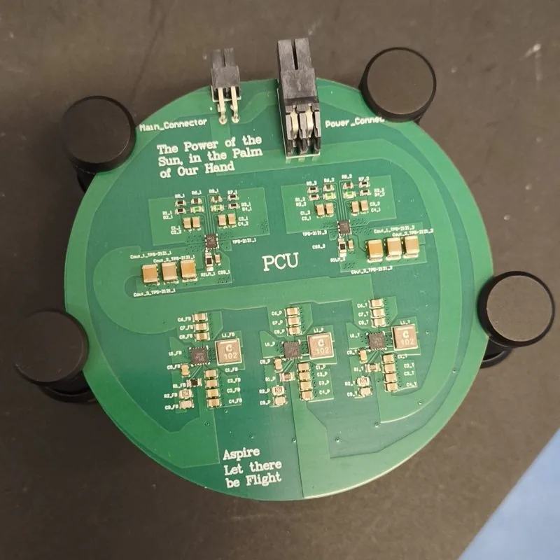

Λεπτομέρειες έργων

Κυκλική Μονάδα Ελέγχου Ισχύος
Μια προσαρμοσμένη κυκλική πλακέτα PCB διανομής ισχύος για πύραυλο κατηγορίας M, σχεδιασμένη από το σχηματικό και το layout μέχρι την κατασκευή και τη θέση σε λειτουργία. Η πλεονάζουσα διαχείριση διπλής εισόδου τροφοδοσίας και τρεις ανεξάρτητες γραμμές buck τροφοδοτούν όλα τα αεροηλεκτρονικά.
Ενεργός Έλεγχος Αεροφρένων
Αλγόριθμοι ελέγχου PID κλειστού βρόχου που κινούν τα servo για την ανάπτυξη των αεροδυναμικών αεροφρένων κατά την πτήση, αναπτυγμένοι και ρυθμισμένοι με τις ομάδες αεροηλεκτρονικών, λογισμικού και ανάκτησης, με καταγραφή δεδομένων για ανάλυση.
Ενσωμάτωση και Επιχειρήσεις Εκτόξευσης
Ενσωμάτωση, δοκιμές και επιθεωρήσεις ετοιμότητας πτήσης για τον πύραυλο κατηγορίας M, καθώς και συναρμολόγηση στον χώρο εκτόξευσης του κινητήρα στερεού καυσίμου, των πυροτεχνικών και των συστημάτων οπλισμού, με βάση τις διαδικασίες ασφαλείας.